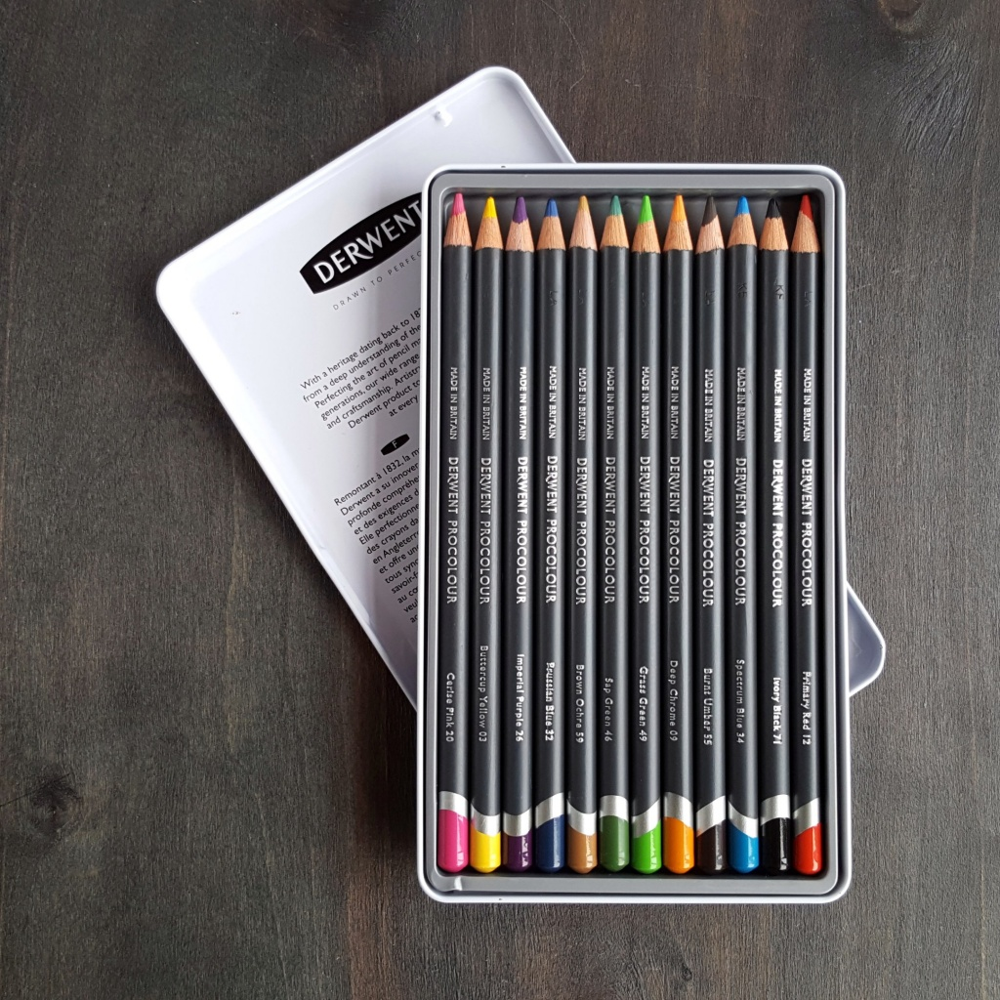

Новинка от Derwent - цветные карандаши Procolour"

Совершенству нет предела, всегда есть место для чего-то нового, для свежих идей. И, хотя у Derwent уже существует несколько линеек отличных цветных карандашей, они создали еще одну. Procolour - интересная и яркая новинка бренда. Посмотрим поближе на эти карандаши?
В наборе из этого обзора 12 цветов. Как обычно у Derwent, такое количество идёт в металлической коробке. На лицевой стороне упаковки - стильный городской скетч, демонстрирующий возможности продукта. Под крышкой, в ложементе, аккуратно лежат карандаши. Деревянные корпуса карандашей окрашены в серый цвет. На каждый нанесены название бренда, серии, цвета.
Как и у многих других карандашей от Derwent, у Procolour круглые корпуса 8 мм, а толщина стержней 4 мм. Стержень при заточке можно зачистить довольно высоко, и благодаря толщине и плотности он не сломается. Это удобно, поскольку позволяет делать как широкие штрихи, так и рисовать тонкой линией.
Как указано на официальном сайте, Procolour содержат большое количество пигмента, они яркие, насыщенные, смешиваются между собой. Одной из главных характеристик является возможность рисовать тонкой линией, но при этом сами карандаши не твёрдые, и цвет наносится легко. Именно этот уникальный состав делает Derwent Procolour такими впечатляющими: удобство нанесения цвета, минимум пыли во время работы, лёгкая заточка, точность и чёткость линий. Кстати, есть и весьма приятный бонус: из-за высокой пигментации расход карандашей не слишком большой. Всего в линейке 72 цвета, среди которых можно найти самые разные интересные оттенки. Например, есть интересные тона для кожи (идеальны для тех, кто любит рисовать портреты), и для пейзажей (превосходные синие, зелёные и коричневые), а также для ярких городских скетчей.